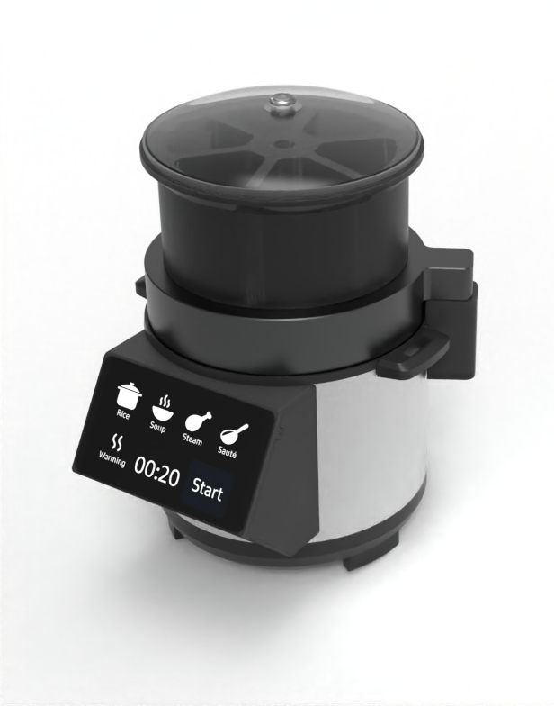

{kind=link}

AUTOMATED CURRY PREPARATION SYSTEM
Role: Mechanical Design Engineering Intern
Company: Siltech Industries
Duration: June 2025 – July 2025
Domain: Consumer Product Development
Role: Mechanical Design Engineering Intern
Company: Siltech Industries
Duration: June 2025 – July 2025
Domain: Consumer Product Development
Designed and developed an automated curry preparation system that transformed a conventional electric cooker into a minimal-intervention cooking appliance. The project focused on mechanical product development, ingredient dispensing, manufacturability, and system integration to automate the cooking process.
Preparing curry requires continuous user intervention for adding ingredients at different stages of cooking, making the process time-consuming and physically demanding.
The objective was to design a product that required users to load pre-cut ingredients once, after which the system would automatically dispense ingredients, manage the cooking sequence, and complete the cooking process without further intervention.
The solution was intended to address the needs of elderly users, working professionals, and households seeking a convenient cooking experience.
My responsibilities included:
The project began by identifying the challenges faced by different user groups during everyday cooking.
The design objectives focused on reducing manual intervention, simplifying operation, improving safety, and enabling reliable automated cooking.
The complete product architecture included:
Each subsystem was designed to operate independently while integrating into a compact and manufacturable product.
Mechanical development focused on designing a dispensing mechanism capable of accurately positioning and releasing ingredients during different stages of the cooking cycle.
Major design activities included:
Complete assemblies were developed in SOLIDWORKS.
Development included:
The design was developed with manufacturing feasibility as a primary objective.
Engineering decisions included:
This project strengthened my understanding of consumer product development by combining user-centred design, mechanical engineering, and manufacturing considerations into a practical automated appliance. It reinforced the importance of designing products that are not only functional but also manufacturable, reliable, and intuitive to use.
{kind=link}